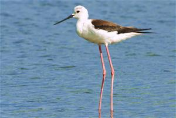
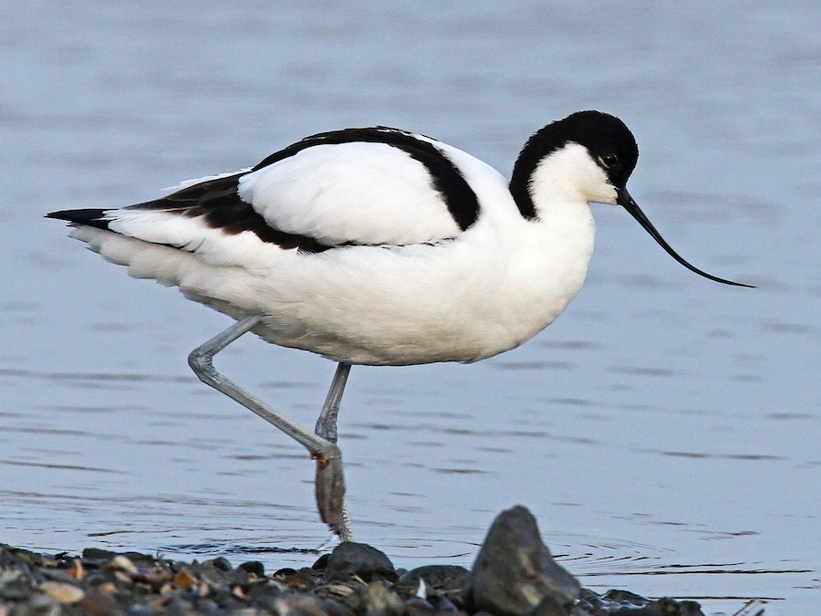
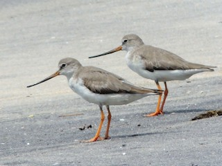

七股鳥類價值圖鑑_魚塭篇（滑鼠靠近看介紹／手機點一下）
提示：手機上可點鳥的圓點開/關資訊卡。
高蹺鴴（Black-winged Stilt）

特徵：超長紅腿、黑白身、細長嘴。
棲地：魚塭、鹽田、淺水濕地。
行為：在淺水中緩步覓食小魚、昆蟲、甲殼類。 生態價值：魚塭淺水區的「健康指標鳥」
🦐 控制小型生物數量
以小魚、昆蟲幼蟲、甲殼類為食，避免某些物種過度爆發
🌊 高度依賴淺水環境
需要「水不深、不濁、不被完全乾涸」的魚塭
→ 出現代表水位管理得宜
🚨 對干擾很敏感
人為活動太頻繁、水質太差，牠們會直接離開
辨識：紅腿是招牌
反嘴鴴（Pied Avocet）

特徵：黑白羽色、嘴向上翹（上翹弧形）。
棲地：潮間帶、鹽田、魚塭淺灘。
行為：常左右掃水「濾食」小型無脊椎。
生態價值：濕地的「水質與底泥檢測員」
🌊 濾食高手
用上翹的嘴在水中左右掃，吃浮游生物、小型無脊椎
💧 對水質很挑
水太髒、污染重，食物結構改變，牠們會消失
🗺️ 國際遷徙物種
出現代表這塊魚塭「接得上東亞—澳洲遷徙線」
辨識：上翹嘴
反嘴鷸（Terek Sandpiper）

特徵：體型較小、嘴微微上翹、腳偏黃。
棲地：泥灘、潟湖、魚塭邊緣。
行為：常快走追逐覓食，吃小蟲、螃蟹幼體等。
生態價值：濕地邊緣的「動態巡邏員」
🏃 行為很活躍
會快走、追逐獵物，捕食小螃蟹、昆蟲
🍽 補上生態縫隙
專吃其他大型鳥較少碰的獵物，減少競爭
🌏 長距離遷徙者
願意停下來，表示魚塭「安全、食物夠」
辨識：小隻、微上翹嘴